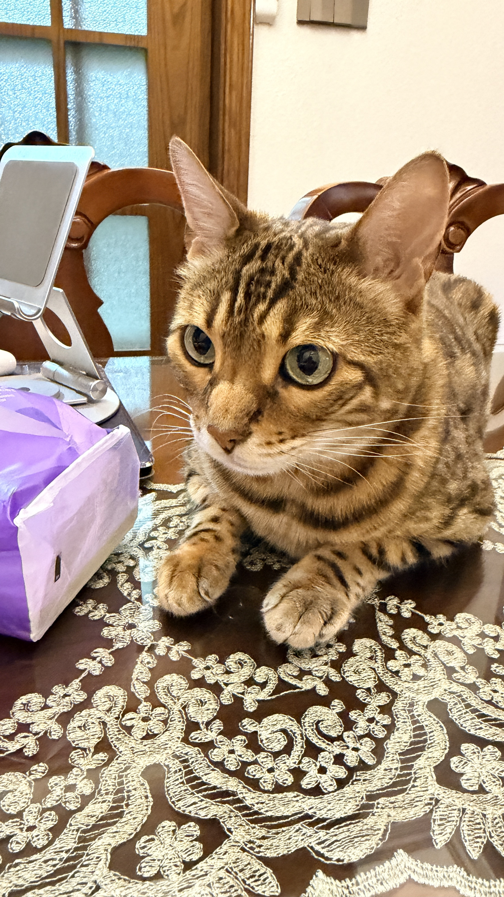

Teaching
I work as a university lecturer, guiding students through ideas that are worth sitting with for longer than a single lecture.
A curious mind who spends weekdays teaching at the university, evenings with two very opinionated cats, and quiet moments behind a camera. This little corner of the internet is where I collect light, words, and the in-between.

I like spaces that feel calm and honest — in classrooms, in photographs, and in the essays I write when inspiration finally shows up.
I work as a university lecturer, guiding students through ideas that are worth sitting with for longer than a single lecture.
My household is run by two adorable cats who supervise naps, keyboard usage, and every attempt to leave the house on time.
Photography keeps me looking. Writing helps me understand what I saw. Both show up here, slowly and occasionally.